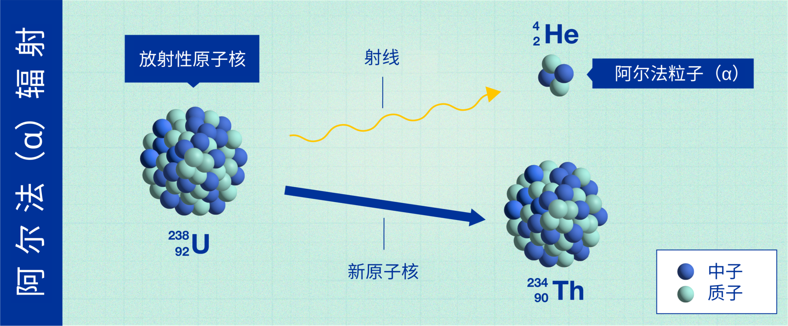
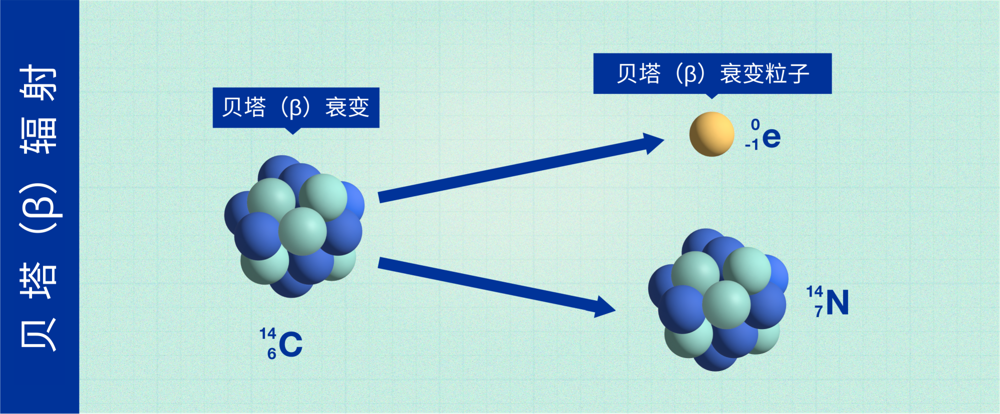
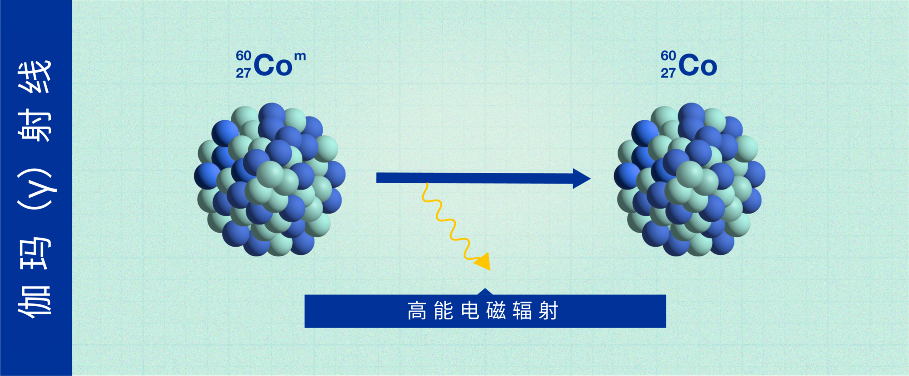
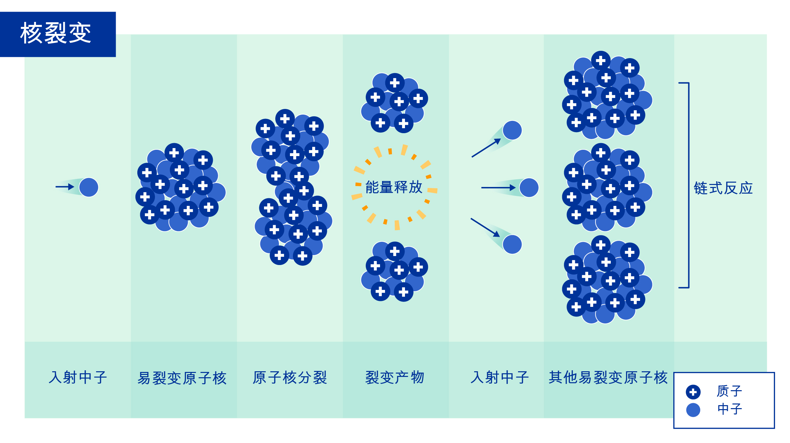
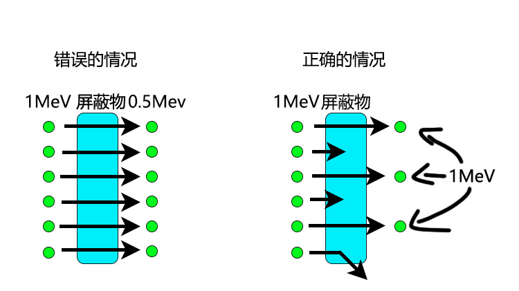

基础知识/屏蔽与衰减
辐射屏蔽
本页目录 9 节
我们先从最基础的概念来讲，最后我将解释γ射线的衰减
阿尔法（α）辐射

α辐射中，衰变的核子会释放出沉重的、带正电的粒子，以便变得更加稳定。这些粒子不能穿透我们的皮肤造成伤害，而且通过使用一张纸往往就可以阻挡。
然而，如果α辐射材料通过呼吸、饮食进入体内，它们将会直接暴露在人体内部组织中，进而会损害健康。
镅-241就是一个通过释放α粒子而衰变的原子实例，用于世界各地的烟雾探测器。
贝塔（β）辐射

在β辐射中，原子核释放出更小的粒子（电子），其穿透力比α粒子更强，取决于其能量，其可以穿过例如1-2厘米的水。一般来说，几毫米厚的铝板可以阻止β辐射。
能量为0.5 MeV的β粒子大约有1米的射程，其距离取决于粒子能量。其速度可达至光速的99%
β粒子是一种电离辐射，从辐射防护的角度来说，它被认为比γ射线更容易游离，但比α粒子更不易游离。游离性越强，对生物组织的危害更大，穿透力则越低。
备注：β射线穿过皮肤后通常在组织里前进不了多少毫米
伽玛（γ）射线

γ射线有多种用途，属于电磁辐射，类似于可用于癌症治疗的X射线，一些γ射线直接穿过人体而不造成伤害，而另一些则被人体吸收并可能造成损害。
通过由混凝土或铅筑成的厚墙，我们可以将γ射线的强度降低到风险较小的水平。这就是为什么医院里为癌症患者提供的放射治疗室的墙壁如此之厚的原因。
中子

中子是相对较大的粒子，是原子核的主要成分之一，不带电，因此不会直接产生电离。
但中子与物质的原子相互作用可以产生α-、β-、γ-或X射线，然后导致电离。中子具有穿透力，只能被厚厚的混凝土、水或石蜡所阻挡。
中子可以通过多种方式产生，例如在核反应堆中或由加速器光束中的高能粒子引发的核反应中。中子可以代表间接电离辐射的一个重要来源。
备注：中子通常很难遇到（非宇宙射线途径）
且很难阻挡，铅钨等高密度金属挡不了多少中子.
阿尔法,贝塔,伽马射线的实质是什么?
阿尔法射线是氦原子核流，β射线是电子流而伽马射线是一种频率极高波长极短的电磁波。
上面说了，伽马射线会根据距离衰减。即在空气中会衰减.
但是如果用铅等屏蔽，衰减会更大。但是能量是不变的.
例如，如果辐射衰减到1/2，则辐射强度将是1/2，因此剂量率的值将减半。然而，此时的辐射能量仍保持原来的大小。
看起来辐射的能量（MeV）就是强度，但能量是不变的，而且不随辐射发出时的能量而变化
在屏蔽放射线的情况下，通过光子的数量会发生变化。
如下图所示
假设1 MeV能量辐射在屏蔽物处衰减一半时，辐射的能量并没有减少，而是能通过障碍物的辐射数量减半。

γ射线与康普顿散射
与带电粒子不同，光子（包括γ射线和x射线）不能像带电粒子那样通过不断地与原子作用产生电离与激发而不断地损失能量。γ射线在通过物质时主要通过光电效应、
康普顿散射和电子对形成等过程把能量传递给物质原子的电子而本身被减弱或吸收。①光电效应是光子把全部能量传给电子，使电子从原子的束缚中释放出来，
而光子本身消失掉，这对低能γ光子（能量小于几百keV的γ光子）的吸收起主要作用。②康普顿散射是光子与自由电子发生非弹性碰撞，把部分能量传给电子，
同时改变自己的方向和能量，对降低中能γ光子（能量在几百keV和几MeV之间）的能量起主要作用。③电子对形成是γ光子与核的库仑场发生作用，光子完全湮没，
其能量转换成一对正负电子的质量和动能以及反冲核的动能，对高能光子（能量大于几MeV）的吸收起主要作用。
γ射线的穿透能力较强，能够进入或穿透人体组织。质量密度大的材料可以有效地吸收γ射线，通常采用铅、钢、混凝土等作为屏蔽材料。
中子射线与屏蔽
原子核位于原子的核心部分，占99.96%以上原子的质量，与它周围围绕的电子组成原子。原子核由质子和中子构成。中子不带电荷，呈电中性，因此不受库仑力的影响。只有当中子碰撞到原子核时才会受到核力的影响。
屏蔽中子主要有两种办法，一是采用所谓的中子慢化剂，既让中子在与慢化剂物质的原子核发生碰撞时损失能量，从而起到降低中子能量的作用；低能的中子会与原子核反应，
从而被吸收。质量较轻的原子核与中子碰撞时，中子损失能量较多，因此屏蔽中子多使用富含氢元素的物质，如水、石蜡、聚乙烯、混凝土等材料。
二是采用易与中子发生核反应的元素，如硼、镉等，这些元素通过核反应会吸收中子，但这些元素通常对低能种子吸收的效果较好。在中子碰撞和吸收的过程中，
一部分的能量会以伽玛辐射的形式释放，因此在屏蔽中子时，还要同时做好伽玛的屏蔽。